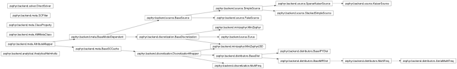

Navigation
index
modules
|
Zephyr devel documentation
»
zephyr package
¶
Inheritance Diagram for AttributeMapper
¶

Subpackages
¶
zephyr.backend package
Subpackages
zephyr.backend.Tests package
Submodules
zephyr.backend.Tests.test_Analytical module
zephyr.backend.Tests.test_Eurus module
zephyr.backend.Tests.test_Meta module
zephyr.backend.Tests.test_MiniZephyr module
zephyr.backend.Tests.test_Sources module
Module contents
Submodules
zephyr.backend.analytical module
zephyr.backend.discretization module
zephyr.backend.eurus module
zephyr.backend.meta module
zephyr.backend.minizephyr module
zephyr.backend.solver module
zephyr.backend.source module
Module contents
zephyr.middleware package
Subpackages
Submodules
zephyr.middleware.fields module
zephyr.middleware.problem module
zephyr.middleware.survey module
zephyr.middleware.util module
Module contents
zephyr.frontend package
Submodules
zephyr.frontend.cli module
Module contents
Module contents
¶
Table Of Contents
zephyr package
Inheritance Diagram for AttributeMapper
Subpackages
Module contents
This Page
Show Source
Quick search
Enter search terms or a module, class or function name.
Navigation
index
modules
|
Zephyr devel documentation
»